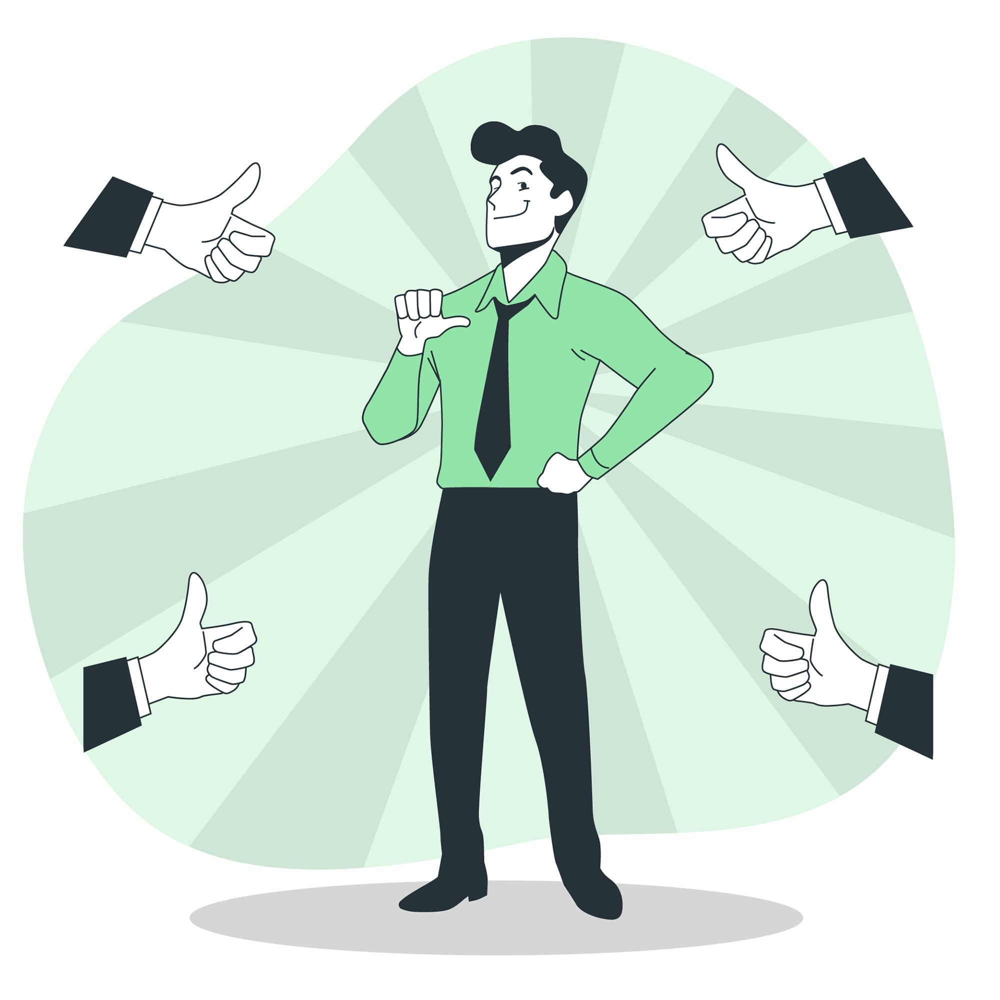

بدائل صحية وإيجابية لاستخدام الإنترنت بشكل آمن
يمكن للأفراد استخدام الإنترنت بأمان وصحة باستخدام البرامج المصممة لذلك، مثل البرامج المراقبة الأبوية والبرامج المحادثات الآمنة.
يمكن للأفراد استخدام الإنترنت بأمان وصحة باستخدام البرامج المصممة لذلك، مثل البرامج المراقبة الأبوية والبرامج المحادثات الآمنة.
الدورات التعليمية عبر الإنترنت: التسجيل في منصات مثل Coursera وUdemy لتعلم مهارات جديدة.
قراءة الكتب الإلكترونية: استخدام مواقع مثل Kindle وGoogle Books للوصول إلى كتب مفيدة.
البحث الأكاديمي والمعلوماتي: متابعة المواقع الموثوقة مثل Wikipedia وGoogle Scholar لتعزيز المعرفة.
مشاهدة الأفلام الوثائقية: متابعة منصات مثل National Geographic وTED Talks لاكتساب المعرفة بطريقة ممتعة.
متابعة القنوات التعليمية على YouTube: مشاهدة محتوى تعليمي في مجالات العلوم، التاريخ، والتكنولوجيا
الألعاب التي تنمي الذكاء: مثل ألعاب الشطرنج، Sudoku، والألعاب الاستراتيجية
البرمجة والتصميم: استخدام منصات مثل Scratch وCode.org لتعلم البرمجة بطريقة ممتعة.
التجارب العلمية الافتراضية: الاستفادة من المواقع التي تقدم محاكاة لتجارب علمية تفاعلية.
المشاركة في المنتديات والمجتمعات الإلكترونية الهادفة: مثل Quora وReddit لتبادل المعرفة.
استخدام الإنترنت لتعزيز العلاقات الاجتماعية: التحدث مع الأصدقاء والعائلة عبر تطبيقات آمنة وبطريقة معتدلة.
المشاركة في الأنشطة التطوعية عبر الإنترنت: مثل المساهمة في مبادرات التوعية والتطوع الافتراضي
تعلم الطهي عبر الإنترنت: متابعة قنوات الطهي والتجربة في المنزل
التصوير والمونتاج: استخدام تطبيقات تحرير الصور والفيديو لصقل المهارات الإبداعية
ممارسة الرسم والتصميم الجرافيكي: الاستفادة من تطبيقات مثل Photoshop وCanva
ممارسة التمارين الرياضية عبر التطبيقات: مثل Nike Training Club وFitOn لممارسة الرياضة في المنزل.
تجربة التأمل والاسترخاء: استخدام تطبيقات مثل Headspace وCalm لتعزيز الصحة النفسية.
اتباع نمط حياة صحي: البحث عن نصائح غذائية وممارسات صحية مفيدة عبر الإنترنت
حل الألغاز والألعاب الذهنية: مثل الكلمات المتقاطعة، والألعاب التحليلية
المشاركة في مسابقات عبر الإنترنت: مثل مسابقات الكتابة، والتصميم، والتصوير
التدوين وكتابة المقالات: بدء مدونة شخصية أو الكتابة في مواقع المحتوى الهادف
استخدام الإنترنت بطريقة آمنة وإيجابية يحقق التوازن بين الترفيه والتعلم، ويساهم في بناء مهارات مفيدة تعزز من تطور الفرد والمجتمع